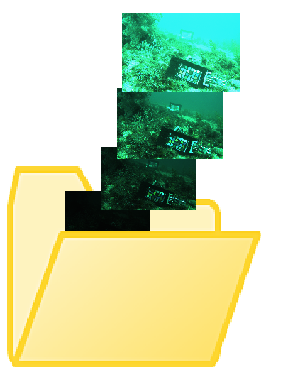
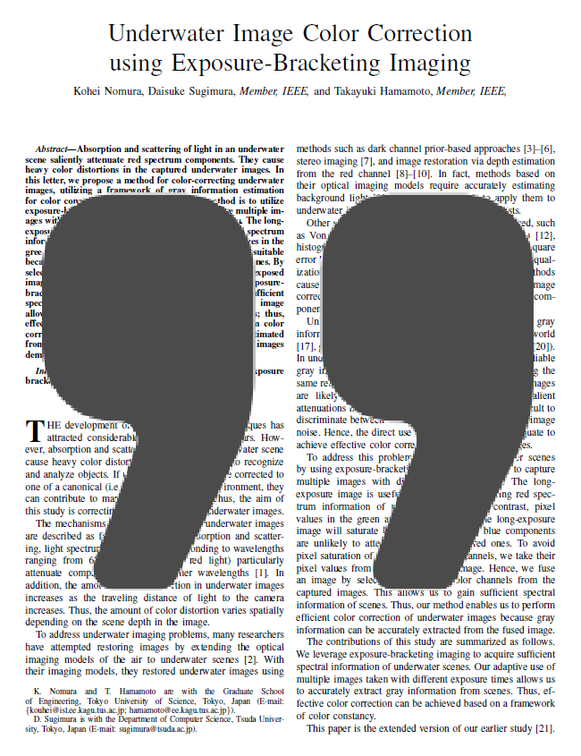

IEEE Signal Processing Letters (SPL), 2018 (impact factor in 2016: 2.528)


Absorption and scattering of light in an underwater
scene saliently attenuate red spectrum components. They cause
heavy color distortions in the captured underwater images. In
this letter, we propose a method for color-correcting underwater
images, utilizing a framework of gray information estimation
for color constancy. The key novelty of our method is to utilize
exposure-bracketing imaging: a technique to capture multiple images
with different exposure times for color correction. The long exposure
image is useful for sufficiently acquiring red spectrum
information of underwater scenes. In contrast, pixel values in the
green and blue channels in the short-exposure image are suitable
because they are unlikely to attenuate more than the red ones. By
selecting appropriate images (i.e., least over- and under-exposed
images) for each color channel from those taken with exposurebracketing
imaging, we fuse an image that includes sufficient
spectral information of underwater scenes. The fused image
allows us to extract reliable gray information of scenes; thus,
effective color corrections can be achieved. We perform color
correction by linear regression of gray information estimated
from the fused image. Experiments using real underwater images
demonstrate the effectiveness of our method.


Underwater Image Color Correction using Exposure-Bracketing Imaging
Kohei Nomura, Daisuke sugimura, Takayuki Hamamoto
IEEE Signal Processing Letters (SPL), Vol.--, No.--, pp.--, May, 2018.

For more results, please see the supplementary material.

This is the underwater image dataset that was used in our paper. (Pass: 2018)

If you use images of our pulications or our dataset, please cite the paper.